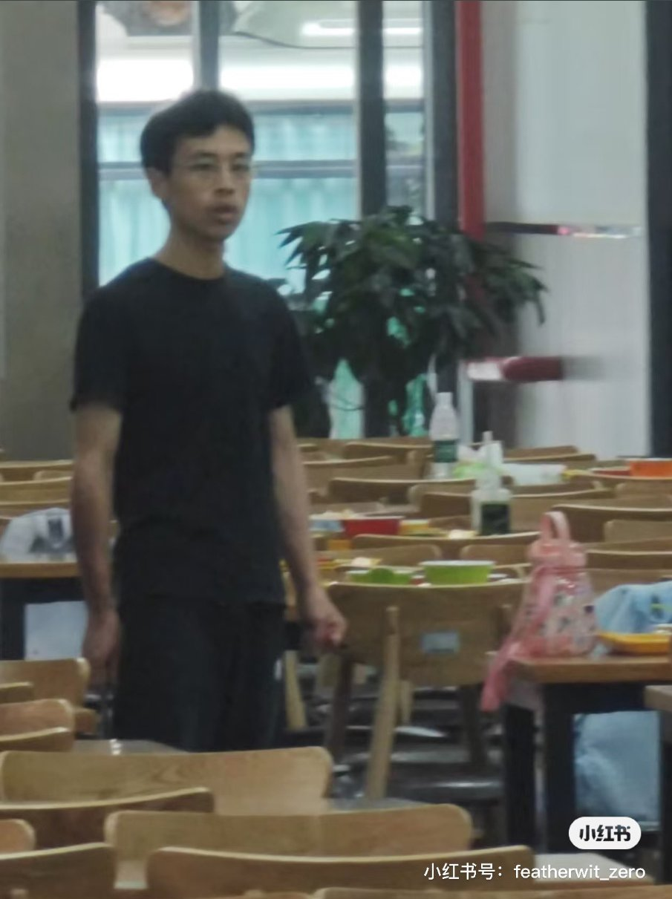
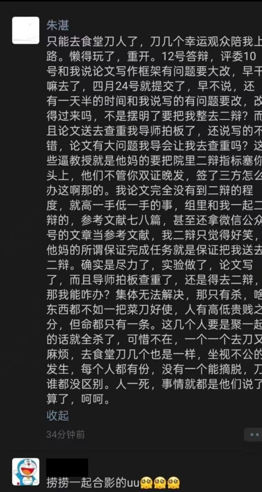

穗_我爱你🏳️⚧️💛🤍💜🖤
@Sui_aini
为什么不去杀老师呢，是不敢吗


李老师不是你老师
@whyyoutouzhele
6月4日，武汉大学四食堂发生持刀砍人事件
一名学生因论文答辩没过，持刀在食堂内随机砍人，现场画面显示有人受伤。
该学生在朋友圈表示，“只能去食堂刀人了，刀几个幸运观众陪我上路。懒得玩了，重开。”
“集体无法解决，那只有杀，啥东西都不如一把菜刀好使。” https://t.co/46H2Sq55ub